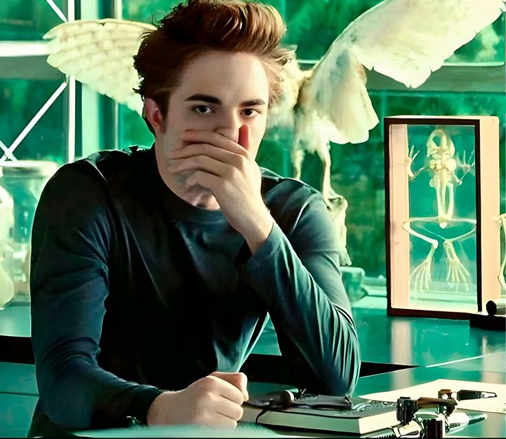

Filter
Du kan style dine billeder med forskellige filtrer - der findes en del. Jeg har prøvet at repræsentere dem igennem det her fantastiske billede af Edward Cullen.

Edward Cullen i 10 filtre
Nedenfor, har jeg lavet nogle eksempler på de type af filtrer, man kan lave i CSS. Du kan hover over hvert billede, for at se forskellen på filteret og originalbilledet.
grayscale
sort-hvid. justeres med %. eksemplet er 100%
sepia
sepia-filter, justeres med % - her ses 100%
blur
sløring. værdien er px. her ses 5px.
brightness
lysner. værdi er %. her er 150%
contrast
ændrer kontrast. her er 200%
saturate
mætning. værdi er % - du ser 200%
hue-rotate
ændrer farvetonerne. værdi er grader. her ses 90deg
invert
negativ filter. værdi er %, her er 100%
opacity
gennemsigtighed. værdi er %, og her ses 50%
drop-shadow
laver en cute skygge bag billedet. placeres med px i alle retninger, og kan få en farve.